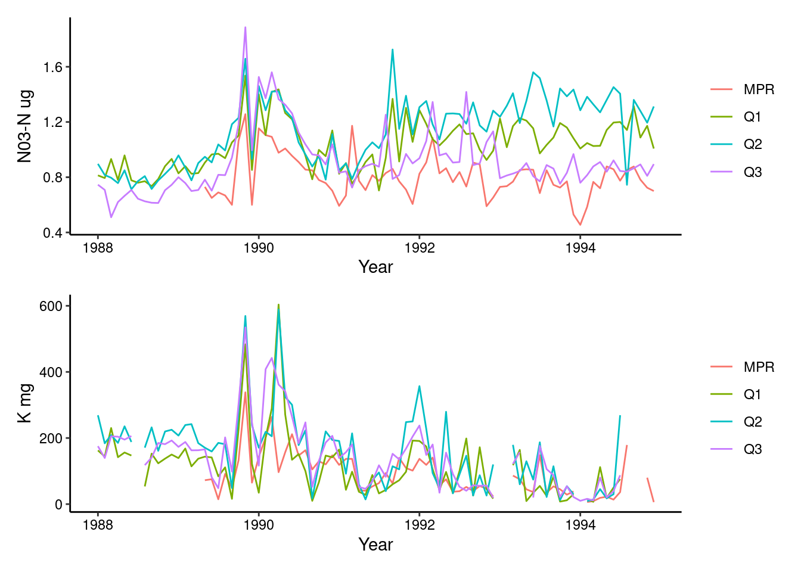

## install.packages("metajam")
## install.packages("tidyverse")
## install.packages("here")
## install.packages("janitor")
## install.packages("lubridate")
## install.packages("patchwork")Water Chemistry Script
Installing packages
Loading libraries
## Importing data directly from website
library(metajam)
## Used to tidy/clean up data and create beautiful ggplots
library(tidyverse)
## Helps us get to file paths
library(here)
## Cleans up column names
library(janitor)
## Easy dating
library(lubridate)
## Combining plots side by side
library(patchwork)Pseudo Code (First draft)
## Read in Q1, Q2, Q3, RMP data sets
## Merge the 4 data sets by date
## Clean names
## Pivot longer
## Select for NO3- (Nitrate) and K (Potassium)
## Group by site
## ggplot for Potassium
## ggplot for Nitrate
## add ggplots together using divide (potassium/nitrate)Reading in the raw data
## Read in the data using metajam:
raw_BQ1 <- metajam::read_d1_files(
folder_path = "/courses/EDS214/threeza-crowd/__QuebradaCuenca1-Bisley__csv",
fnc = "read_csv")
raw_BQ2 <- metajam::read_d1_files(
folder_path = "/courses/EDS214/threeza-crowd/__QuebradaCuenca2-Bisley__csv",
fnc = "read_csv")
raw_BQ3 <- metajam::read_d1_files(
folder_path = "/courses/EDS214/threeza-crowd/__QuebradaCuenca3-Bisley__csv",
fnc = "read_csv")
raw_PRM <- metajam::read_d1_files(
folder_path = "/courses/EDS214/threeza-crowd/__RioMameyesPuenteRoto__csv",
fnc = "read_csv")
## Save the data frames from each site data set as the initial data frame for each
raw_BQ1 <- raw_BQ1$data
raw_BQ2 <- raw_BQ2$data
raw_BQ3 <- raw_BQ3$data
raw_PRM <- raw_PRM$dataCleaning the data
The code below gives us a standard naming convention by making all titles lowercase and formatting special characters
bq1 <- raw_BQ1 %>%
clean_names()
bq2 <- raw_BQ2 %>%
clean_names()
bq3 <- raw_BQ3 %>%
clean_names()
prm <- raw_PRM %>%
clean_names()Combine the rows
## We are stacking the data to match the datasets by the column names.
joined_data <- bind_rows(bq1, bq2, bq3, prm)
## Select to keep rows: sample_id, sample_date, no3_n, k
## We also are plotting the values by month so we standardized all dates to fall on the first of every month
stream_quality <- joined_data %>%
select(sample_id, sample_date, no3_n, k) %>%
mutate(year = year(sample_date),
date = ymd(paste0(year, "-", month(sample_date), "-1"))) %>%
filter(year %in% 1988:1994)
## We are summarizing the data to get the mean of each of our variables (nitrate and potassium)
monthly_quality <- stream_quality %>%
group_by(sample_id, date) %>%
summarize(monthlyno3 = mean(no3_n, na.rm = TRUE),
monthlyk = mean(k, na.rm = TRUE))Creating our first graph
## Creating a graph for nitrate levels over time.
monthlyno3graph <- ggplot(monthly_quality,
aes(x = date,
y = monthlyno3)) +
geom_line(aes(color = sample_id)) +
theme_classic() +
theme(legend.title = element_blank(),
axis.text.x = element_text(colour = "black"),
axis.text.y = element_text(colour = "black")) +
labs(x = "Year",
y = "K mg")
monthlykgraph <- ggplot(monthly_quality,
aes(x = date,
y = monthlyk)) +
geom_line(aes(color = sample_id)) +
theme_classic() +
theme(legend.title = element_blank(),
axis.text.x = element_text(colour = "black"),
axis.text.y = element_text(colour = "black")) +
labs(x = "Year",
y = "N03-N ug")
monthlykgraph / monthlyno3graph
Workflow: we experimented with answering different questions and this was the code from those times
# stream_explore <- joined_data %>%
# select(sample_id, sample_date, p_h, si_o2, temp) %>%
# mutate(year = year(sample_date),
# date = ymd(paste0(year, "-", month(sample_date), "-1"))) %>%
# filter(year %in% 2007:2009)
#
# monthly_explore <- stream_explore %>%
# group_by(sample_id, date) %>%
# summarize(p_h = mean(p_h, na.rm = TRUE),
# temp = mean(temp, na.rm = TRUE)) %>%
# pivot_longer(cols = p_h:temp,
# names_to = "indicator",
# values_to = "value")
#
# ggplot(data = monthly_explore,
# aes(x= date,
# y = value)) +
# geom_line() +
# facet_wrap(~indicator,scales = "free")
#
# # temp <- monthly_explore %>%
# # filter(indicator %in% c("temp"))
# #
# # ph_only <- monthly_explore %>%
# # filter(indicator == "p_h")
# #
# # ph <- ggplot(data = ph_only,
# # aes(x = date,
# # y = value)) +
# # geom_line()
# #
# # tempplot <- ggplot(temp,
# # aes(x = date,
# # y = value,
# # color = indicator)) +
# # geom_line()
# #
# # tempplot / ph
# Minimum monthly temperature rise from 2010-2018
Filtering data
# Creating monthly data from 2010 to 2018
monthly_temps <- joined_data %>%
select(sample_id, sample_date, temp) %>%
mutate(year = year(sample_date),
date = ymd(paste0(year, "-", month(sample_date), "-1"))) %>%
filter(year %in% 2010:2018)
## Finding the minimum tempurature every month
min_monthly <- monthly_temps %>%
group_by(sample_id, date) %>%
summarize(temp = min(temp))Creating visualization
## Creating a temperature plot for each site to show the increases in the minimum monthly temperatures from 2010-2018
temp_plot <- ggplot(data = min_monthly,
aes(x = date,
y = temp)) +
geom_point(aes(color = sample_id)) +
scale_color_manual(values = c("#65AFC0", "#C986E7", "#6BCB9B", "darkgoldenrod2")) +
geom_smooth(method = lm, se = FALSE, col = 'darkorange3', size = 1) +
theme_minimal() +
facet_wrap(~sample_id) +
theme_classic() +
theme(legend.position = "none",
axis.text.x = element_text(colour = "black"),
axis.text.y = element_text(colour = "black")) +
labs(x = "Year",
y = "Temperature (Celsius)",
title = "Minimum monthly tempuratures from years 2010-2018",
caption = "data source: https://doi.org/10.6073/pasta/1dd1a59a7e6fbe95fdf8736477d81b83",
subtitle = "Luquillo Mountain (Luquillo Experimental Forest) sites")
temp_plot
Finding the equations for the linear regression for each site:
## To find the linear regression of each sample site, we first created
## separate data sets for each site
min_monthly_Q1 <- min_monthly %>%
filter(sample_id == "Q1")
min_monthly_Q2 <- min_monthly %>%
filter(sample_id == "Q2")
min_monthly_Q3 <- min_monthly %>%
filter(sample_id == "Q3")
min_monthly_MPR <- min_monthly %>%
filter(sample_id == "MPR")
## Then, use lm to find the linear regression for each site
# and save the equation as a string
## First, site Q1:
lm_tot_Q1 <- lm(min_monthly_Q1$temp ~ min_monthly_Q1$date)$coefficients
lm_string_Q1 <- paste0("y = ", lm_tot_Q1[1], " + ", lm_tot_Q1[2], "x")
lm_string_Q1[1] "y = 18.1564945231052 + 0.000275390269758822x"## Site Q2
lm_tot_Q2 <- lm(min_monthly_Q2$temp ~ min_monthly_Q2$date)$coefficients
lm_string_Q2 <- paste0("y = ", lm_tot_Q2[1], " + ", lm_tot_Q2[2], "x")
lm_string_Q2[1] "y = 17.7295710003906 + 0.00028996392385561x"## Site Q3
lm_tot_Q3 <- lm(min_monthly_Q3$temp ~ min_monthly_Q3$date)$coefficients
lm_string_Q3 <- paste0("y = ", lm_tot_Q3[1], " + ", lm_tot_Q3[2], "x")
lm_string_Q3[1] "y = 16.6914467306882 + 0.000342491478974022x"## Site MPR
lm_tot_MPR <- lm(min_monthly_MPR$temp ~ min_monthly_MPR$date)$coefficients
lm_string_MPR <- paste0("y = ", lm_tot_MPR[1], " + ", lm_tot_MPR[2], "x")
lm_string_MPR[1] "y = 15.6800498151802 + 0.000425744186740397x"Failed function to find equations
# Tried to make a function to make the above process cleaner, but using
# lm in a function proved difficult!
# lm_string <- function(data, x, y) {
# lm_total <- lm(paste(y, "~", x), data = data)
# lm_coef <- lm_total$coefficients
# equation_string <- paste0("y = ", lm_coef[1], " + ", lm_coef[2])
# }
#
# intercept <- lm_eqn$coefficients